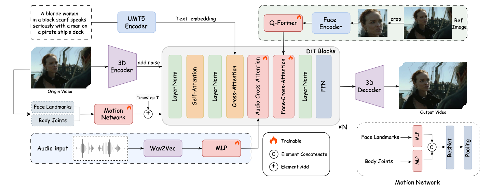

Creating a realistic animatable avatar from a single static portrait remains challenging. Existing approaches often struggle to capture subtle facial expressions, the associated global body movements, and the dynamic background. To address these limitations, we propose a novel framework that leverages a pretrained video diffusion transformer model to generate high-fidelity, coherent talking portraits with controllable motion dynamics. At the core of our work is a dual-stage audio-visual alignment strategy. In the first stage, we employ a clip-level training scheme to establish coherent global motion by aligning audio-driven dynamics across the entire scene, including the reference portrait, contextual objects, and background. In the second stage, we refine lip movements at the frame level using a lip-tracing mask, ensuring precise synchronization with audio signals. To preserve identity without compromising motion flexibility, we replace the commonly used reference network with a facial-focused cross-attention module that effectively maintains facial consistency throughout the video. Furthermore, we integrate a motion intensity modulation module that explicitly controls expression and body motion intensity, enabling controllable manipulation of portrait movements beyond mere lip motion. Extensive experimental results show that our proposed approach achieves higher quality with better realism, coherence, motion intensity, and identity preservation.
FantasyTalking can generate highly realistic lip synchronization, ensuring that the character's mouth movements match the audio. Supports various styles of avatars, whether realistic or cartoon, and can generate high-quality conversation videos.
FantasyTalking supports the generation of realistic talking videos with various body ranges and orientations, including close-up portraits, half-body, full-body, as well as front-facing and side-facing poses.
FantasyTalking can animate characters and animals in various styles, generating dynamic, expressive, and naturally realistic stylized videos.
We compared the performance of our FantasyTalking model with OmniHuman-1, the current SOTA method for multimodality-conditioned human video generation.

FantasyTalking is built upon the Wan2.1 video diffusion transformer model to generate highly realistic and visually coherent talking portraits. Leveraging a dual-stage audio-visual alignment training process, our method effectively captures the relationship between audio signals and lip movements, facial expressions, as well as body motions. To enhance identity consistency within the generated videos, we propose a face-focused method to accurately preserve identity features. Additionally, a motion network is utilized to control the magnitude of facial expressions and body movements, ensuring natural and varied animations.
@inproceedings{wang2025fantasytalking,
title={Fantasytalking: Realistic talking portrait generation via coherent motion synthesis},
author={Wang, Mengchao and Wang, Qiang and Jiang, Fan and Fan, Yaqi and Zhang, Yunpeng and Qi, Yonggang and Zhao, Kun and Xu, Mu},
booktitle={Proceedings of the 33rd ACM International Conference on Multimedia},
pages={9891--9900},
year={2025}
}